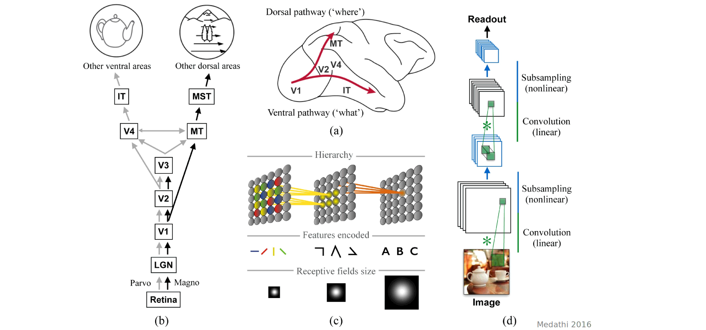
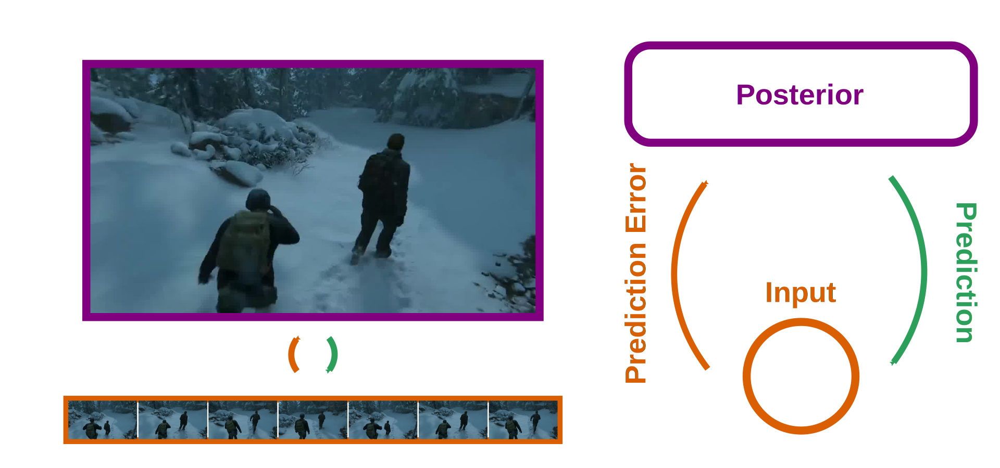

FRONTAL CORTEX REGULATES ACCESS TO CONSCIOUSNESS
Clinician Scientist Program | Jour Fixe 24/9/2022
Veith Weilnhammer
The Ghost in the Shell
Subjectivity
- How does subjective experience occur at all?
Neural Mechanisms

- What are the neural events that generate conscious experience?
Scale

- What is the scale at which conscious experience emerges from biological activity?
Function

- What is the evolutionary function of conscious experience?
Detection

- How can we detect conscious experience outside of the human mind?
5 problems

Mechanisms

- How can consciousness be generated at 20 W?
Feedforward processing

- Individual frames are processed independently
Feedforward processing

- Individual frames are processed independently
Natural environments

- Individual frames are strongly autocorrelated
Feedback

- Predictive coding compresses the input and saves energy
Feedback

- There is extensive feedback connectivity within the brain
Behavioral evidence
Behavior
- Humans fluctuate between internally- and exernally-biased modes of processing (Weilnhammer et al., iScience 2021)
Behavior
- Between-mode fluctuations are an adaptive phenomenon that occurs in humans and mice (Weilnhammer et al., bioRxiv 2022, under review)
Behavior
- Clear behavioral evidence for an impact of feedback on conscious experience
Neural mechanisms
- Primary visual cortex represents stimulus predictions (Weilnhammer et al., Journal of Neuroscience 2018)
Imaging

- Prediction errors are encoded in IFC and V5/hMT+
TMS

- Virtual IFC-lesions disrupt the updating of conscious experience in response to conflict
Imaging

Imaging
- IFC regulates the access of conflicting information into awareness
Computational Psychiatry
Computational Psychiatry

- Hallucinators are biased toward noisy sensory inputs (Weilnhammer et al., Schizophrenia Bulletin 2020)
Computational Psychiatry
- Hallucinations are mediated by an alteration in the balance between feedback and feedforward information
Computational Psychiatry

Computational Psychiatry

Computational Psychiatry
Summary
Thanks!
Thanks a lot for your attention!
Bibliography
Weilnhammer VA, Heiner S, Eckert A-L, Standvoß K, Sterzer P. Humans and mice fluctuate between external and internal modes of sensory processing. bioRxiv 2022.
Weilnhammer VA, Fritsch M, Chikermane M, Eckert AL, Kanthak K, Stuke H, Kaminski J, Sterzer P. An Active Role of Inferior Frontal Cortex in Conscious Experience. Current Biology 2021.
Weilnhammer, Lukas, Eckert, Stuke, Heinz, Sterzer. Psychotic Experiences in Schizophrenia and Sensitivity to Sensory Evidence. Schizophrenia Bulletin 2020.
Weilnhammer VA, Chikermane M, Sterzer P. Bistable perception alternates between internal and external modes of sensory processing. iScience 2021.
Weilnhammer, Stuke, Sterzer, Schmack. Hierarchical Predictions for Perceptual Decisions. Journal of Neuroscience 2018.